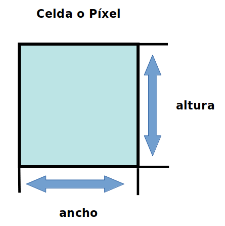

En una grilla ráster cada píxel o celda tiene un valor. Estos valores pueden ser negativos o positivos, enteros o de punto flotante (decimales), y lo que hacen es representar una variable o fenómeno, como por ejemplo una categoría, magnitud, altura o valor espectral.
En términos generales, los valores enteros se utilizan para representar datos categóricos o discretos y los valores flotantes se utilizan para representar superficies continuas.
La superficie representada por cada píxel contiene el mismo ancho y altura, por ejemplo, si tenemos un ráster que cubre un área de 100 kilómetros cuadrados y está compuesto por 100 celdas, cada una representa 1 kilómetro cuadrado con ancho y altura iguales, es decir 1 km x 1 km.

Ilustración: LABGRS, 2020.
La dimensión de los píxeles o celdas puede ser tan pequeño o tan grande como sea necesario. Cuanto más pequeño es el tamaño de esta hay mayor detalle y aumentan los elementos posibles de discriminar en la capa ráster, pero por otro lado aumenta el tiempo de proceso y espacio de almacenamiento por haber un mayor número de celdas.
Esta característica de la información espacial de tipo ráster se llama resolución espacial.